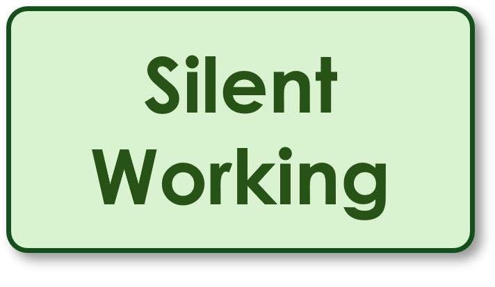

character set
A mapping between characters and numerical codes.
Characters, ASCII, Unicode and Data Units

START · Retrieve earlier learning first. Answers are on page 4.
Name Class / Date
Do Now · Four retrieval questions
1 · Previous lesson. Convert hexadecimal 3C to denary.
2 · Multiple choice. What is denary 42 in hexadecimal?
□ 2B □ 29 □ A2 □ 2A
□ 2B □ 29 □ A2 □ 2A
3 · Earlier learning. Convert binary 00101010 to hexadecimal using two four-bit groups.
4 · Challenge. Convert hexadecimal 2A into eight-bit binary.
Objectives
Explain how character codes represent text, compare ASCII with Unicode, and convert between bits and bytes.
Key Vocabulary · Read and retrieve
ASCII
A relatively small character set.
A relatively small character set.
Unicode
A standard covering a much wider range of characters and symbols.
A standard covering a much wider range of characters and symbols.
byte
A group of eight bits.
A group of eight bits.
Retrieve: cover the definitions. Write what each word means.
ASCIIcharacter set
Unicodebyte